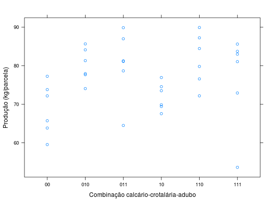
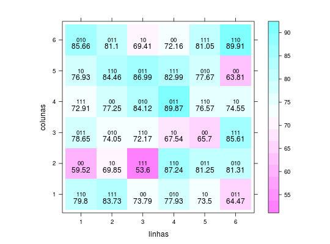

Experimento de adubação de cana da Usina Monte Alegre, com fertilizantes minerais e adubos verdes. O delineamento utilizado foi um quadrado latino de 6 x 6.
Um data.frame com 36 observações e 4 variáveis, em que
linhascolunasadubprodPIMENTEL-GOMES (2009), Tabela 6.3.1, página 99.
Considerando que a composição do fator adubação é dada por 3 fatores combinados (calcário, crotalária e adubo mineral), ao transformar os digitos nos níveis desses fatores, tem-se na realidade um experimento fatorial incompleto no qual não existem os níveis de de adução mineral para o nível sem crotalária.
data(PimentelTb6.3.1)#> Warning: data set ‘PimentelTb6.3.1’ not foundstr(PimentelTb6.3.1)#> 'data.frame': 36 obs. of 4 variables: #> $ linhas : Factor w/ 6 levels "1","2","3","4",..: 1 2 3 4 5 6 1 2 3 4 ... #> $ colunas: Factor w/ 6 levels "1","2","3","4",..: 1 1 1 1 1 1 2 2 2 2 ... #> $ adub : Factor w/ 6 levels "00","010","011",..: 5 6 1 2 4 3 1 4 6 5 ... #> $ prod : num 79.8 83.7 73.8 77.9 73.5 ...aggregate(prod ~ adub, data = PimentelTb6.3.1, FUN = sum)#> adub prod #> 1 00 412.23 #> 2 010 480.74 #> 3 011 482.33 #> 4 10 431.78 #> 5 110 490.15 #> 6 111 459.89library(lattice) xyplot(prod ~ adub, data = PimentelTb6.3.1, xlab = "Combinação calcário-crotalária-adubo", ylab = "Produção (kg/parcela)")levelplot(prod ~ linhas + colunas, data = PimentelTb6.3.1, aspect = "iso", panel = function(x, y, z, subscripts, ...) { panel.levelplot(x, y, z, subscripts = subscripts, ...) panel.text(x, y, PimentelTb6.3.1$adub[subscripts], cex = 0.8) panel.text(x, y, z, pos = 1) })# Decompondo os digitos para formas os níveis dos fatores # constituintes. L <- strsplit(as.character(PimentelTb6.3.1$adub), split = "") t(sapply(L, FUN = function(x) { if (length(x) <= 2) c(x, NA) else x }))#> [,1] [,2] [,3] #> [1,] "1" "1" "0" #> [2,] "1" "1" "1" #> [3,] "0" "0" NA #> [4,] "0" "1" "0" #> [5,] "1" "0" NA #> [6,] "0" "1" "1" #> [7,] "0" "0" NA #> [8,] "1" "0" NA #> [9,] "1" "1" "1" #> [10,] "1" "1" "0" #> [11,] "0" "1" "1" #> [12,] "0" "1" "0" #> [13,] "0" "1" "1" #> [14,] "0" "1" "0" #> [15,] "1" "1" "0" #> [16,] "1" "0" NA #> [17,] "0" "0" NA #> [18,] "1" "1" "1" #> [19,] "1" "1" "1" #> [20,] "0" "0" NA #> [21,] "0" "1" "0" #> [22,] "0" "1" "1" #> [23,] "1" "1" "0" #> [24,] "1" "0" NA #> [25,] "1" "0" NA #> [26,] "1" "1" "0" #> [27,] "0" "1" "1" #> [28,] "1" "1" "1" #> [29,] "0" "1" "0" #> [30,] "0" "0" NA #> [31,] "0" "1" "0" #> [32,] "0" "1" "1" #> [33,] "1" "0" NA #> [34,] "0" "0" NA #> [35,] "1" "1" "1" #> [36,] "1" "1" "0"